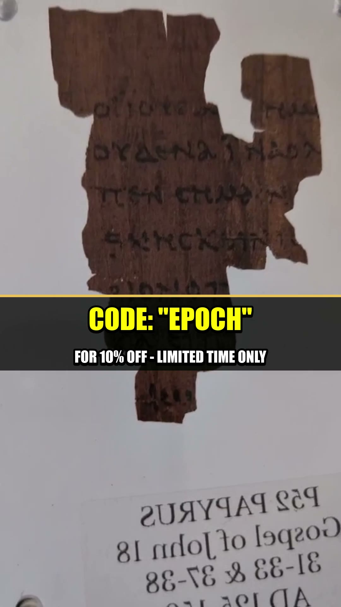

In 1920, an Oxford scholar named Bernard Grenfell bought a lot of papyrus in Egypt. Scraps. Market goods. The kind of thing that filled crates and got shipped home to be sorted whenever someone found the time.
Nobody found the time for fourteen years.

The Fragment in the Drawer
The scrap sat in the collection of the John Rylands Library in Manchester until 1934, when a young researcher named Colin H. Roberts was working through the unsorted material. He turned over a piece no larger than a credit card, torn on every edge, and started reading the Greek.
He froze. He recognized the words. This was not an accounting note or a tax receipt like most of the pile. It was the Gospel of John.
One side carried part of John chapter 18, verses 31 to 33. The other side carried verses 37 and 38. The passage is the trial of Jesus before Pontius Pilate. It contains the line every reader remembers: Pilate asking, "What is truth?"
Why 125 AD Changes Everything
Roberts compared the handwriting to dated documents from Egypt, papyri that carry their own year stamped in the text. The letterforms matched the early second century. The consensus that formed around his work put the fragment at roughly 125 AD, with a range that most scholars keep inside the first half of the 100s.
Sit with that number. The Gospel of John is traditionally dated to the 90s AD. A copy written around 125 AD means this page was produced within a generation of the original, in living memory of people who could have known the apostles. For a document from the ancient world, that gap between composition and surviving copy is almost unheard of. Most classical texts survive only in copies made a thousand years after the fact.
Cataloged as Rylands Papyrus 457 and known to scholars as P52, it became, and remains, the oldest surviving fragment of the New Testament anywhere on Earth.
A scrap the size of a credit card, ignored in a drawer for fourteen years, turned out to be the closest physical link we have to the moment the Gospels were written.
What It Actually Says
The choice of passage is its own quiet detail. Of all the words that could have survived on the oldest scrap of the New Testament, what came through the centuries is the confrontation between power and truth. Pilate holding the authority of Rome. A prisoner telling him that authority is not the same thing as the truth.
The Greek is written on both sides, recto and verso, which tells us it came from a codex, a bound book, not a scroll. That matters more than it sounds. It means the earliest Christians were already using the book format while the rest of the literate world still rolled its texts on scrolls. The technology of the modern book and the spread of this one text move together from the very beginning.
Where It Lives, and Why You Cannot Touch It
The original sits sealed behind climate-controlled glass at the John Rylands Library in Manchester. It is one of the most protected objects in the building. You can look at photographs, you can read the scholarship, you can stand in front of the case. You will never hold it. No one outside a short list of conservators ever will.
That is the frustration at the center of every genuinely old artifact. The closer a thing gets to the source, the further it gets locked away from the people who care about it most.
So we went looking for the next best thing.
Own a piece of it
A handmade, museum-grade replica of Papyrus 52 on genuine Egyptian papyrus. The same Greek text on both sides, verso and recto, set in a magnetic floating frame with the full translation included. Made in the UK, ships worldwide. A piece of Christian history for your own wall, or the kind of gift someone keeps for generations.
We arranged 10% off with code EPOCH. Limited time.
Get the P52 Replica · 10% off →Hidden Epoch may earn a commission on purchases made through this link. Code EPOCH applies your discount automatically.
The original will stay in Manchester, behind glass, for the rest of your life and long after. But the text on it, the oldest surviving page of the New Testament, does not have to stay locked away from you. That is the whole point of a good replica. Not to fake the artifact, but to put the words back within reach.
Before you go
7 books the Vatican doesn't want you reading. Free PDF — the texts they cut, with sources. Joined by 140+ Inner Circle members.
No spam. Unsubscribe anytime.
Go deeper
The Hidden Canon, Vol. I — Enoch. Jubilees. Thomas. Mary. Judas. 90 pages, 14 chapters, every receipt cited. The books your Bible quietly removed.
Read the Canon →